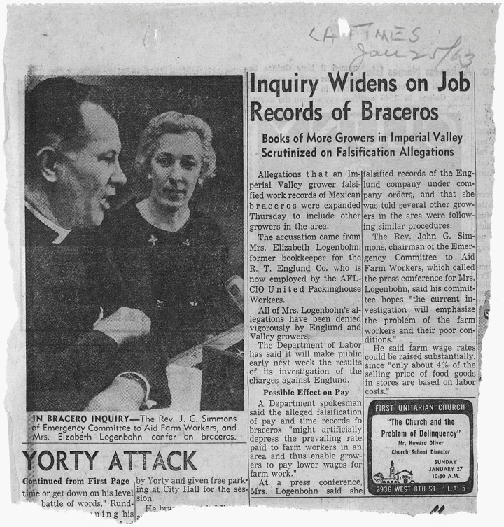
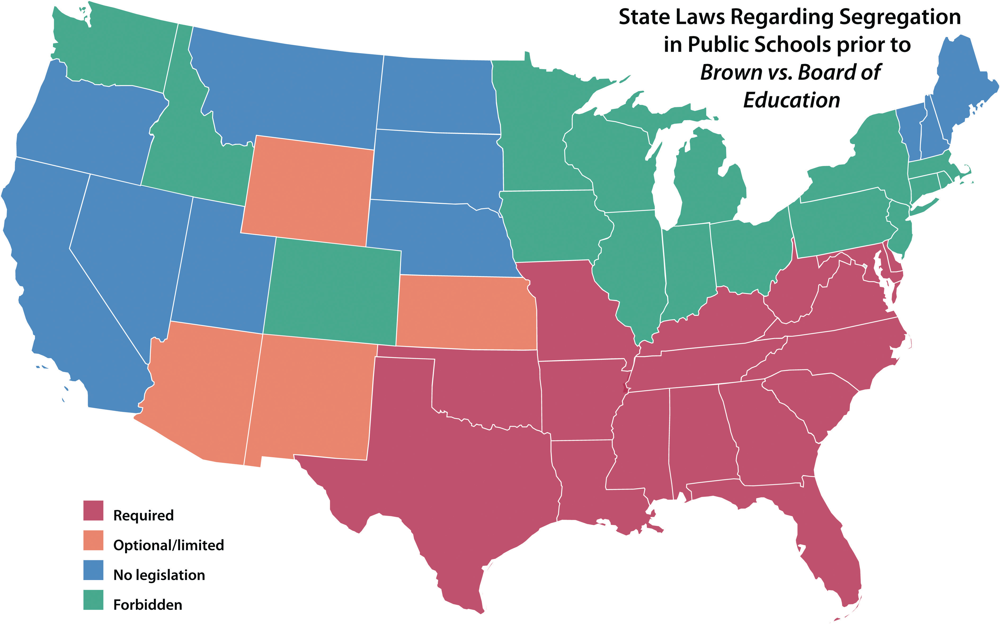
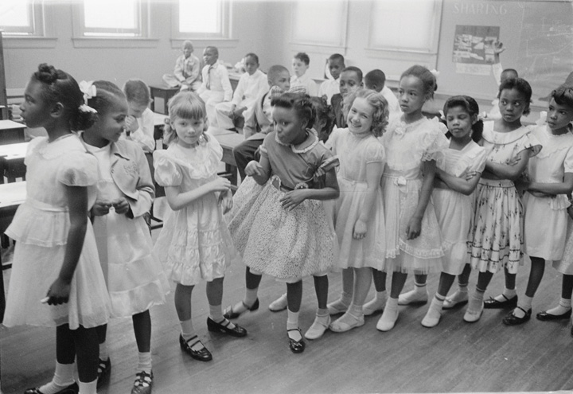
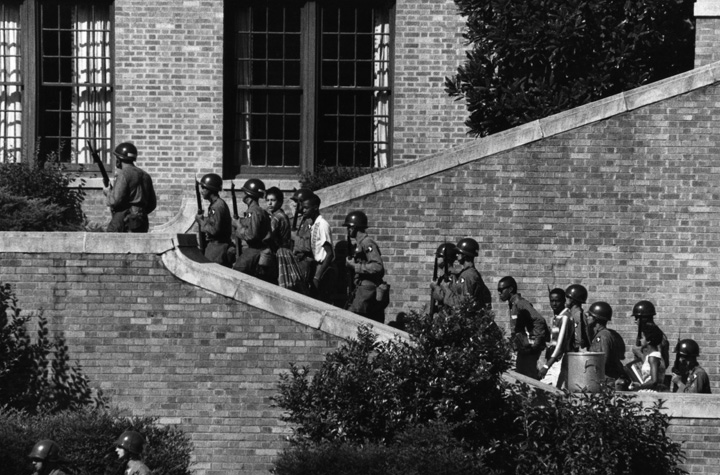
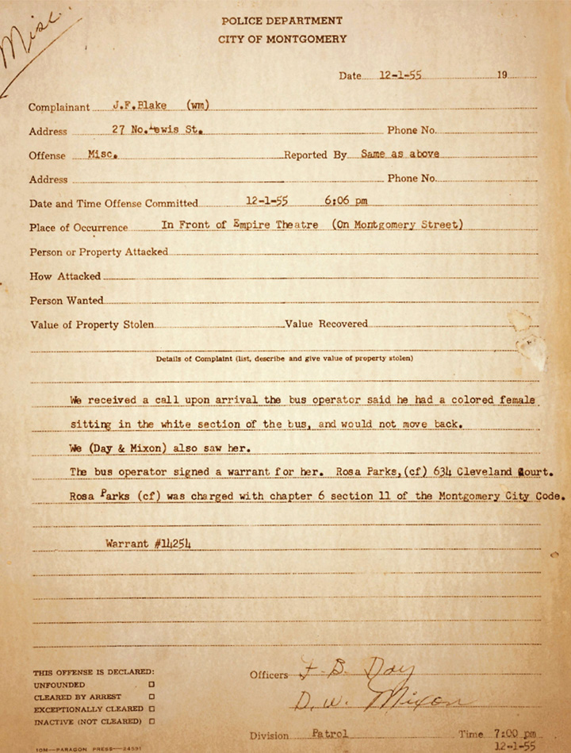

Figure 10.9

Representative of the faster pace of life and material affluence, Americans began consuming large numbers of frozen meals that were precooked and individually packaged. These kinds of meals were seldom enjoyed by a family that sat around a table and became known as “TV dinners.”
Historians have frequently applied the label “The Affluent Society” to 1950s America. The moniker is both a reference to the increasing material wealth many Americans enjoyed and a tongue-in-cheek jab at the shortsightedness that led few to challenge the notion that all Americans were sharing equally in this prosperity. In 1958, Harvard economist John Galbraith’s book The Affluent Society aimed to explain the perpetuation of crushing poverty in a nation that enjoyed such vast wealth. Other scholars pointed out that despite the tendency of most Americans to describe themselves as “middle class,” the gap between the rich and the poor continued to expand.
Even if many Americans who considered themselves members of the middle class were actually part of the working poor, America’s standards of poverty and affluence were still exceptional compared to other nations. By 1960, a majority of American families owned their homes. Luxury items such as cars and televisions were increasingly considered necessities. With the exception of major purchases, Americans also continued to avoid debt. For many Americans, references connecting affluence and egalitarianism carried no ironic overtones as the problems of poverty and racial injustice seemed distant from their reality.
Figure 10.10

A political cartoon of this era mocking the flimsy foundation of McCarthy’s accusations, which were built on half-truths and complete falsifications.
Despite the atmosphere of prosperity, concerns about internal security continued to plague the nation throughout the 1950s. Senator Joseph McCarthy’s techniques were such that very few Americans were willing to challenge his attacks else they became his next target. Even President Eisenhower, a man who detested McCarthy and enjoyed global acclaim, avoided any confrontation with the bellicose senator from Wisconsin. However, a handful of prominent Americans at least indirectly challenged McCarthy’s techniques and the hysteria from which they had spawned. Journalist Edward Murrow used his nightly program to investigate the plight of an Air Force veteran who was discharged because he came from a family of Communist sympathizers. Playwright Arthur Miller wrote The Crucible, a 1953 drama ostensibly centered on the Salem Witch Trials. Those who read Miller’s work in these years clearly perceived the author’s purpose of exposing the parallels between Cold War hysteria and the Puritanical fear-mongering and wild accusations that erupted in seventeenth-century Massachusetts.
The characters in Miller’s play who sought evidence before convicting those accused of crimes soon found that they were among the defendants. Miller utilized these events in his drama to make his audience consider the tactics of misdirection and guilt by association used by McCarthy. Just as those called to defend themselves on charges of witchcraft had no way to prove their innocence, charges of disloyalty proved equally elusive. These accusations also placed critics of both witch hunts on the defensive by equating dissent with treachery. The indirect nature of the methods Murrow and Miller used to criticize McCarthy helped spare these two from the fate of The Hollywood Ten and others who challenged anti-Communist hysteria in less veiled ways. However, Murrow’s television show was later cancelled by its network while Miller was investigated by Congress and subject to harassment by demagogues.
The Crucible debuted in 1953, the same year that Joseph Stalin died and the Korean War ended. These two events helped to reduce the weight of McCarthy’s accusations. Perhaps more importantly, more and more Americans were already growing tired of the Wisconsin Senator’s wild accusations that were still not substantiated by any credible evidence. Even some of McCarthy’s strongest supporters began advising the Senator to stop talking about lists of “card-carrying Communists” in favor of more subjective accusations about the government being soft on Communism. Instead, McCarthy continued to make accusations that even his supporters knew were based on exaggerated or faulty information.
In 1954, Edward Murrow aired an exposé revealing the hollowness of McCarthy’s unsubstantiated accusations. The Wisconsin Senator could only respond with insults against the host. McCarthy then expanded his accusations to include members of the army. Military officials refused to be cowed by the senator’s bullying techniques and arranged a televised hearing. Millions watched live as McCarthy failed to provide any evidence of disloyal military officers. Instead, he himself became the subject of an inquisition for an earlier attempt to secure a draft deferment for one of his supporters. McCarthy responded with a personal attack on a young army officer he claimed was a Communist. McCarthy had attacked this particular young man before and had promised not to do so again. The army’s chief counsel, Joseph Welch, cut the Senator off with the now-famous line “Have you no sense of decency, sir, at long last?” Later that year, the Senate officially censured McCarthy for “unbecoming conduct.” He died three years later from an alcohol-related illness.
Senator McCarthy had surrendered all credibility, yet McCarthyism lived on. J. Edgar Hoover continued to use the FBI to monitor, discredit, infiltrate, and otherwise harass left-leaning political groups and civil rights organizations for the next two decades through a program known as COINTELPROA FBI program whose name was derived from the words Counter Intelligence Program, COINTELPRO was a series of covert operations between the 1950s and 1970s that sought to infiltrate and disrupt a host of organizations the FBI considered “subversive.” The targeted organizations included white supremacist groups such as the KKK, but they were usually left-wing or civil rights groups whose messages were critical toward the desired national image of progress and equality.. An acronym for “Counter Intelligence Program,” the FBI launched COINTELPRO in 1956 to infiltrate and disrupt Communist organizations in the United States. The program quickly escalated to using wiretaps and other forms of illegal surveillance techniques against a variety of organizations from the Ku Klux Klan to Vietnam protesters and the Black Panthers.
Eisenhower recognized the dangers of openly criticizing Hoover and the FBI. He went along with the Bureau chief’s demands to expand the various surveillance operations on thousands of Americans from Martin Luther King Jr. to college students and Native American leaders. Even J. Robert Oppenheimer, the “father of the atomic bomb” was targeted for speaking words of caution against the government’s plan to expand its arsenal of nuclear weapons. Oppenheimer was fired from his job after the government removed his security clearance, the result of an investigation that made it clear that the FBI had bugged his phone conversations for many years. Fellow scientists refused to speak with the unfairly disgraced physicist for fear they might share a similar fate. Meanwhile, various loyalty programs continued to investigate the personal lives of government employees, with hundreds of workers being fired based on little more than vaguely suspicious behaviors observed by unnamed sources.
Eisenhower and most of his Republican colleagues continued to support the expansion of popular New Deal programs such as Social Security. Under his administration, the program expanded to include three-quarters of employed workers and their beneficiaries and the total amount of payments increased tenfold between 1950 and 1960. The idea of a federally mandated minimum wage also continued to receive support by both parties, with the main partisan division being Democratic efforts to expand its provisions to include domestic and farm workers. These liberals found few adherents and these laborers, usually women and minorities, were not covered by the new minimum wage that guaranteed all workers at least one dollar per hour of labor. The two parties also differed on the extent to which the federal government should become involved in labor relations, its power to regulate private businesses, and the size and scope of the welfare state. However, neither Eisenhower nor his Republican colleagues in Congress sought to end entitlement programs such as Social Security or Medicare, meaning that these New Deal initiatives would continue regardless of which party controlled Washington.
Labor unions in the 1950s represented just over a third of workers beyond those in agriculture and domestic service, who were not unionized at all. The industrial unions of the 1950s were both bigger and more conservative than many of the early twentieth century. Nearly all focused on wage and benefit increases, and very few challenged the Capitalist system or advocated collective ownership. The American Federation of Labor (AFL) and Congress of Industrial Organizations (CIO) merged in 1955, yet the new AFL-CIOCreated by the 1955 merger of the American Federation of Labor and Congress of Industrial Organizations, the AFL-CIO is a federation of independent unions and represents more than 10 million workers who belong to over fifty different unions. experienced steady declines in the overall percentage of workers who were part of their organization. Part of this decline was structural and reflected overall trends in the economy. The total number of white-collar workers outpaced those who worked with their hands in the late twentieth century. Another challenge for the AFL-CIO was that many corporations were transferring their operations to states that had been hostile to unions and even to overseas locations.
Another reason for the decline was that some union members believed the leadership of the AFL-CIO was becoming complacent. Major strikes declined during the 1950s, and much of the work that was previously carried out by union leaders was now contracted to law firms and arbitration specialists. These hearings were often successful in terms of winning concessions for union members, but they lacked the apparent drama of previous labor activism. Many business leaders believed the opposite—that the leading unions were still too active and too powerful. They viewed the outcome of the most dramatic labor stoppage in the late 1950s, a nationwide strike by half a million steelworkers, as evidence that labor unions had a dangerous amount of control over the private sector. At issue was the conflict between utilizing new technology and reducing the workforce. Union contracts specified the number of workers that should be assigned to certain tasks, but steel companies sought to lower those numbers and save labor costs through automation. After four months, the unions prevailed. The outcome of the 1959 Steel Strike may have been a pyrrhic victory for the unions, however, as many Americans perceived the unions as opposing innovation and efficiency. Even worse for steel workers, American businesses turned to overseas firms during the strike, and domestic steel production never recovered.
Perhaps the greatest setback for the union movement during this era was the growing perception of corruption among union leaders. A 1957 Senate investigation exposed connections between a number of union leaders and organized crime. The investigation led to Jimmy Hoffa of the Teamsters Union becoming a household name. The investigation detailed sensational criminal allegations, from starting fake unions to laundering mafia money and an attempt to seize control of the entire shipping industry. In the end, the Senate secured little more than indictments against Hoffa. From that point forward, most Americans associated the Teamsters and numerous other leading unions with corruption. Senator Robert Kennedy rose to prominence as a leading member of the investigation, but he also alienated many working-class Americans who believed he was motivated by an agenda to exaggerate corruption as a means of furthering his own career.
Jimmy Hoffa notwithstanding, the late 1950s was a banner period for those in the domestic shipping industry. In 1956, Congress approved the Federal Highway Act, a national defense initiative that facilitated the movement of troops and equipment while also facilitating private and commercial transportation. The measure led to the construction of the federal interstate system and its 40,000 miles of highways. The Federal Highway Act received its strongest support among automobile and oil companies, but it worried many residents and business owners in smaller cities. Because these new interstates were designed to move traffic at high speeds without stopping, the roads bypassed small towns and directed traffic away from older commercial centers such as downtowns. The result was a drastic improvement in the ability to travel across the nation by automobile as well as the devastation of many small towns and businesses that were bypassed by the new roads.
One of the justifications for interstate construction was to provide civilians with a rapid means of egress in the case of nuclear attack. Defense remained the top budgetary priority of the federal government, with defense spending increasing from $13 billion at the start of the Korean War to more than $50 billion in 1953. The size and expense of America’s armed forces had contracted sharply following every war in American history up to this time. However, following the Korean War, the United States decided to maintain a large military and spent more than $40 billion each year through the end of the decade. President Eisenhower was skeptical about the wisdom of this course of action, and chose to highlight the potential danger of escalating military budgets in his January 1961 farewell address.
Eisenhower reminded Americans that the nation had only recently developed a permanent armaments industry. The outgoing president believed that this was a necessary development given the changing nature of warfare that placed greater importance on rapid mobilization. However, Eisenhower cautioned against the possibility that those representing the armaments industry might develop “unwarranted influence” in the halls of Congress. He labeled this potential problem the Military-Industrial ComplexA phrase utilized by outgoing President Dwight Eisenhower to describe what he believed was collusion between the representatives of the munitions industry, the military, and elected officials., a name connoting Eisenhower’s belief that military and government leaders were often guilty of doing the bidding of defense contractors. In the years that followed, Americans became increasingly aware that lobbyists representing corporations that produced military equipment were donating millions of dollars to political campaigns. These donations were clearly intended to influence politicians who might return the favor by purchasing their products or voting for overall increases in military budgets. Eisenhower believed that the potential harm was not only wasteful spending but also declining accountability among lawmakers to represent the views of their constituents.
Fidel Castro’s nationalization of the Cuban sugar fields led US companies to expand their operations in Puerto Rico. This expansion led to the eviction of hundreds of thousands of Puerto Ricans, many of whom were recruited to migrate to American cities by US firms. Between 1945 and 1953, 40,000 to 70,000 Puerto Ricans migrated to New York City each year. By 1960, Puerto Ricans represented nearly 10 percent of the city’s inhabitants. In fact, there were more Puerto Ricans living in East Harlem, Chicago, and Miami than lived in the Puerto Rican capital of San Juan. Although all Puerto Ricans were US citizens, most white Americans viewed the newcomers as outsiders. Signs explicitly barred Puerto Ricans from restaurants, while several attempts were made to legally prevent the newcomers from voting in local elections.
Figure 10.11
This 1963 story in the Los Angeles Times revealed allegations by a bookkeeper who testified that her former employer falsified the records of Braceros in order to withhold some of the worker’s pay.
US companies continued to recruit Mexican nationals to come to the United States through the Bracero Program. Unlike Puerto Ricans, their lack of citizenship made Mexican workers even more vulnerable. About 450,000 Braceros signed temporary labor contracts in 1959. These contracts permitted the migrants to legally live and work in the United States for a specified period of time and withheld a percentage of their pay until they returned to Mexico. Mexico encountered severe internal conflict during this period, leading many Braceros to choose to stay in the United States and forfeit their withheld pay. Some Americans were alarmed by the growing number of unlawful migrants, leading to the arrest of thousands of undocumented aliens under the terms of the 1950 McCarran-Nixon Internal Security Act. This law had been passed to permit the government to deport “subversives” such as Communists, but was now utilized against Mexican migrants. In 1954, the federal government supported police raids on private homes and areas where migrants were known to gather. The dragnet resulted in a million deportations in only one year. The name the federal government chose for this program, “Operation Wetback,” led many to believe that racism was a leading factor in the way the raids were conducted.
A growing cadre of Mexican American scholars and activists documented the frequent use of unlawful tactics among police and immigration agents against persons suspected of being illegal aliens. They also protested the mass deportations and publicized the conditions Mexican laborers faced. Former union organizer Ernesto Galarza completed a PhD at Columbia University and published Strangers in Our Fields in 1956. Galarza’s study brought national attention to the conditions faced by migrant farm workers. Writer Americo Paredes earned a PhD from the University of Texas at Austin and countered negative stereotypes by publishing a history of South Texas from the perspective of a Mexican American folk hero. Paredes presented an alternative to the dominant narrative by writing history from the perspective of Texans—the original inhabitants of what had only recently become the state of Texas. By this perspective, the Anglo founders of the state were illegal immigrants and the original Texas Rangers were imperialist mercenaries.
In 1952, the McCarran-Walter ActAn amendment revising the immigration policies of the United States, the McCarran-Walter Act represented a shift from quotas based on national origin to a system based on promoting skilled immigrants and prohibit migration of individuals whose political views were viewed as dangerous. Although many of the national origins provisions were removed or modified, the McCarran-Walter Act still limited the migration of nonwhite peoples from Asia to Africa. removed race as a barrier to citizenship and ended the almost total ban against Asian migration. However, the law reflected continuing prejudice against Asian Americans and merely modified the nation’s immigration quota system. After the law passed, no more than 105 Chinese and 185 Japanese immigrants could become citizens each year. Immigration historian Oscar Handlin was among the many who protested these quotas as tantamount to racial exclusion. However, included in the language of the act was a permissive statute granting relatives of current citizens the ability to migrate to the United States beyond these numerical limits. Little-noticed at the time, more than 100,000 people of Asian and African descent immigrated to the United States in the next decade under this provision. President Truman shared the criticisms of Handlin and others who thought the new law was racist. However, the president’s veto was overturned by the Democrat-controlled Congress.
Increased immigration led to new attempts to promote assimilation, especially regarding Native Americans who lived on reservations. The Truman administration appointed the same person who was in charge of operating the Japanese internment camps to lead the Bureau of Indian Affairs. The Eisenhower administration sought to reduce funding for reservations. And in 1953, a joint congressional resolution called for the gradual end to all special programs and funding for Native Americans, with the goal of rapid and complete assimilation. TerminationThe process of removing federal recognition of a Native American tribe. Termination was proposed as a means to encourage assimilation by offering a final settlement to Native American tribes that its proponents believed would lead to full integration of tribal members into American society. Opponents countered that termination was nothing more than an attempt to withdraw Native American sovereignty. These programs were abandoned after several well-publicized failures, and the government later rerecognized many of the terminated tribes., as the policy soon became known, led to the end of federal recognition of fourteen tribes between 1954 and 1960. Many Native Americans contrasted the massive government aid that was given to Europe without any conditions with the federal government’s policy of termination. They believed the requirement that natives surrender tribal sovereignty was part of a flawed plan to incorporate natives into the US mainstream. The high-profile failure of the policy to improve the lives of two leading tribes, the Menominee of Wisconsin and the Klamath of Oregon, led to a successful campaign to end termination in favor of new programs aimed at strengthening Native American self-governance and revitalizing life on the reservations.
Prior to an 1864 treaty, the federal government had granted the Klamath more than 20 million acres. By the 1950s, that reservation had been reduced to 1.3 million acres in Oregon. However, the tribe was still largely financially independent due to the reservation’s natural resources of farmland and timber. Tribal members shared revenue from the use of their land and lived modestly. Previous treaties had guaranteed annual payments to the tribe in exchange for their acceptance of provisions reducing the size of their reservation as well as hunting and fishing rights on area lands. As a result, most Klamath had grown financially dependent on the federal government and the distributions of income paid from the use of their lands. Termination threatened to end the reservation system completely in favor of a lump-sum payment to tribal members. Advocates of termination pressured the Klamath and even spread misinformation asserting that they might lose everything if they did not accept the lump-sum payment.
In 1954, the government agreed to purchase the reservation for $90 million and end federal recognition of the tribe and cease all future payments to tribal members. This proved to be a financially shrewd move on the part of the government, given revenues in excess of $200 million the federal government received for the use of these lands in subsequent years. Some of the Klamath invested their share of the federal payoff wisely. Many others had little knowledge of finance and quickly spent or were swindled out of their money. The result was a tremendous increase in alcoholism, juvenile delinquency, and abject poverty. For many historians, termination represented the modern-day equivalent to the Dawes Act and its destruction of native communities and transfer of native lands to the federal government and land speculators.
In the late 1930s, black plaintiffs won decisions that secured their right to attend public universities that had previously excluded them. By 1950, the NAACP decided to challenge segregation in public schools. At this time racial separation was required by law in seventeen states and the District of Columbia. In 1954, five lawsuits challenging the constitutionality of school segregation were consolidated under the name Brown v. The Board of Education of Topeka, Kansas. The reason the NAACP’s case took on the name of the Topeka case was because its plaintiff’s name preceded the others alphabetically. However, the selection of a Midwestern city helped to demonstrate that segregation was not simply a Southern phenomenon. Kansas officials were in the process of outlawing segregation but did not move quickly enough to avoid the dubious distinction of being forever associated with racial discrimination. Instead the state’s case was assigned to a recent law school graduate who was personally opposed to segregation.
Figure 10.12
At the time of the Brown decision, seventeen states had laws requiring racial segregation while a number of others had no laws on the subject. States such as Kansas permitted segregation if there was a large number of black students that would allow a separate school to be operated economically.
The young attorney would find that he was opposed by the State Department, in addition to the NAACP and a host of liberal organizations. This was because the 1954 case, like everything else at this time, was deeply influenced by the Cold War. Soviet agents had made extensive use of US school segregation in their global propaganda, so much so that the State Department wrote a number of legal briefs in support of the NAACP’s position. Diplomats and bureaucrats alike lobbied the Supreme Court and helped convince the justices to unanimously declare that the maintenance of separate schools would no longer be permissible. Over a hundred local courts had made similar rulings beginning in Iowa in 1868. The 1954 decision was historic, however, because the Supreme Court ruled that segregation violated the Fourteenth Amendment of the Constitution. It also explicitly overturned the doctrine of “separate but equal” by declaring that even if schools received equal funding, the simple act of segregation alone violated the doctrine of equal protection. And because the case was decided by the Supreme Court, the decision applied to schools throughout the nation.
The court’s decision prompted mixed reactions throughout Border South states that still explicitly required or permitted racial segregation by law. In Missouri, Oklahoma, Delaware, Maryland, and West Virginia, state education officials promised to adhere to the ruling. Many stated that segregation would end with little trouble as long as the change was implemented slowly. The governor of Texas also indicated that his officials would comply with the ruling, but hedged his remarks by indicating that it would take many years before school officials in his state could even develop a plan to start the process.
Those who hoped to stall the process of integration were encouraged by many of the events that followed. President Eisenhower avoided any statement on the matter, and most school districts continued to maintain separate schools. More than ninety Southern congressmen issued a statement they dubbed the Southern Manifesto; it denounced the Brown decision and urged government officials to ignore it “by all lawful means.” State officials throughout the Deep South promised total resistance to any effort to “force” the desegregation of their public schools. For example, Georgia governor Herman Talmadge promised that he would find a way around the court’s decision and “insure permanent segregation of the races.”
Figure 10.13
Not all Southern communities actively resisted integration. Many cities in the Border South peacefully integrated their schools despite resistance by some parents. This photo depicts an integrated classroom in Washington, DC, in 1955.
Urban school districts on the border between North and South, like Baltimore, Lexington, and St. Louis, pursued a different strategy. In predominantly white neighborhoods, a handful of middle-class black students attended formerly all-white schools, while inner-city districts remained almost completely segregated. Some school districts in rural and smaller cities throughout the Border South integrated immediately, but most simply chose to do nothing and see what the courts and federal government would do next. They soon found that black communities would not wait. Local NAACP chapters throughout these communities gathered petitions and filed lawsuits demanding an immediate and unconditional end to segregation.
In 1955, the Supreme Court issued what has become known as Brown II, a legal brief that was supposed to contain legal guidelines on how desegregation must proceed. Hoping to bridge the controversy and demonstrate sensitivity to the concerns of Southern whites, the Court declared that public schools must proceed “with all deliberate speed” toward integration. While the court intended that this would demonstrate an understanding of the logistical difficulties of reassigning pupils and teachers, this second Brown decision was interpreted by many whites as a loophole they could exploit. In the absence of presidential or congressional support for integration, decisions regarding integration were determined at the state and local level and within the federal courts. In addition, the Brown decision did not yet apply to private schools.
The failure of Brown II to provide any timetable for compliance sent a clear message that the government wished to counter Soviet propaganda by outlawing school segregation but would not actively enforce the measure. If black communities desired to end segregation, they would still have to initiate lawsuits and secure court orders forcing each individual school board to integrate. In other words, integration was required by law, but the burden of enforcement fell on those citizens who desired compliance with the law.
Figure 10.14
Federal troops were deployed to Arkansas to protect the nine African American students as they attended school during an entire academic year. When faced with future integration cases, many schools in Arkansas and throughout the Deep South simply closed.
Such was the situation in Arkansas in 1957 after the black community secured a court order demanding the integration of Little Rock’s Central High School. Nine students with outstanding academic credentials were selected to be the first to integrate the school. Arkansas governor Orval Faubus responded by calling out the Arkansas National Guard to prevent the children from entering the building. This action by a governor to use state troops to prevent a federal court order provoked a constitutional crisis and forced President Eisenhower to end his silence on the matter. Eisenhower summoned Faubus to Washington, where the two agreed that they both opposed the court’s decision but had no choice but to follow the law. When Faubus returned to Arkansas, however, he played to the white supremacist majority and once again sought to thwart integration. Eisenhower responded by placing the Arkansas National Guard under federal orders and sending the 101st Airborne to enforce the court order mandating integration. For the rest of the school year, federalized troops escorted the nine students to school. Leading Southern politicians appealed to the populist anger of many whites, likening the use of federal troops as a “second invasion” of the South and promising to hold the line against further Yankee efforts to force integration on their communities.
The desegregation of the buses of Montgomery, Alabama, was one of the few clear victories for the Civil Rights Movement in the Deep South during the 1950s. However, numerous community organizations and the courage of activists such as Mississippi’s Medgar EversA civil rights leader in Mississippi who was assassinated on June 12, 1963. Despite the viciousness of those who opposed him, Evers followed the doctrine of nonviolence. However, he also carried a gun with him every day and left multiple weapons around his home to defend his family. After her husband’s murder, Myrlie Evers continued to run the local NAACP office that she and her husband had operated since its founding; she later became one of the organization’s national leaders. continued to challenge segregation throughout the decade. After returning to his native Mississippi following World War II, Evers and other veterans marched to the courthouse to cast their votes. They were forced to flee for their lives by an armed mob inside the courthouse. After graduating with honors from the historically black Alcorn A&M (today Alcorn State University), Evers attempted in 1954 to enroll in the all-white law school at the University of Mississippi. His application was denied on a technicality. In the meantime, he accepted a position as the NAACP’s first field secretary in Mississippi. It took university officials nearly a year to come up with a reason to reject the academically talented Evers. While his application was still pending, the young Evers attended to his ailing father. Evers recalled that his last moments with his father were marred by the screams of a lynch mob outside the basement window of the segregated hospital. Later that same year, Medgar and his wife Myrlie Evers opened the first NAACP office in Mississippi.
Racial violence thrust Medgar Evers into the national spotlight in 1955 when he led the fight to convict the murderers of fourteen-year-old Emmett Till. The young man was killed in retaliation for allegedly whistling at a young white woman. Although Till’s murderers bragged about the crime, they were never convicted. The very fact that Mississippi held a trial, however, was evidence that the Evers had forced a change in the attitudes of both blacks and whites in the Deep South. Blacks in Mississippi defied white mobs outside the trial, openly brandishing weapons as a warning against future attacks. Till’s mother requested that her son’s casket be left open so that everyone would have to see the beaten and disfigured body of her son. “I wanted the world to see what they did to my baby,” she explained. Photos of Till’s mutilated face were published in newspapers throughout the world. While Till was one of hundreds of African Americans whose murders escaped justice despite eyewitness reports, the mutilated face of Emmett Till mobilized blacks and some whites behind the growing civil rights movement.
In 1956, segregationists formed the Mississippi Sovereignty Commission. This was but one of many state-funded organizations that used millions of taxpayer dollars to fight integration and spy on civil rights leaders. Recently declassified records include thousands of pages detailing how the Mississippi Sovereignty Commission funded the White Citizens Council, illegally spied on black leaders, worked to persuade private employers to fire black workers connected with civil rights, and was even responsible for some of the information used by Klansmen to murder civil rights activists during its twenty-year existence.
In spite of the daily threat of violence, civil rights activism continued in Mississippi and beyond. Students at HBCUs like Florida A&M initiated a bus boycott in 1956 that led to the desegregation of buses in Tallahassee. The following year, students at the University of Texas lobbied for racial integration. In 1958, black students protested segregation in the public schools of Washington, DC, with the help of Jackie Robinson. Martin Luther King Jr. and a coalition of black clergy responded to the demands of their parishioners and formed the Southern Christian Leadership Conference (SCLC)Formed by Martin Luther King Jr. in 1957, the SCLC was an organization led by black ministers who supported the civil rights movement. Although the SCLC was more conservative than many other civil rights groups, the participation of ministers and churches provided the civil rights movement with institutional support, and most civil rights meetings would be held in black churches throughout the nation. in 1957. The SCLC was a coalition of preachers who viewed desegregation as part of the mission of the black church. This organization remained rather conservative compared to later civil rights groups. However, students and others prodded SCLC leaders such as King to support their direct action campaigns such as sit-ins. Before long, King even agreed to join the students and share their hardships.
Black communities throughout the North and West secured civil rights gains through direct action, court challenges, and by petitioning state legislatures throughout the decade. In 1953, black activists in the state of Washington succeeded in passing an ordinance banning racial discrimination in employment. Two years later, blacks in New Mexico secured a civil rights law banning segregation in restaurants, hotels, and all other public places. Nationally, the NAACP sought similar legal change through federal courts. Between 1938 and 1961, the NAACP took thirty-two cases to the US Supreme Court and won twenty-nine of them. In 1946, for example, the courts banned segregation on buses traveling through multiple states (buses operating in only one state were subject only to the laws of that state). In 1947, members of the Congress of Racial Equality (CORE) launched the Journey of Reconciliation, a collection of white and black activists who traveled together and sought to enforce the court’s ban on segregation in interstate travel. However, CORE’s efforts went largely unnoticed among whites as well as some African Americans.
Less than a decade later, however, a protest against bus segregation would spur a renaissance in CORE’s philosophy on direct action. Whereas interstate travel was not an everyday experience, Southern blacks relied on city bus systems for transportation. Segregation on city buses was more personal than interstate travel because riders on a particular route usually knew one another. Birmingham, Alabama, and many other Southern bus systems required that black patrons follow a humiliating daily ritual by entering the front of the bus, paying the fare to the white bus driver, and then exiting the bus and walking to the back door. Once they reentered, a black patron could select an open seat in the back of the bus if it was available. If at any point a white rider did not have a seat, the nearest black patron was expected to silently leave his or her seat and stand in the back.
What is too big for one person to handle can be figured out by all of us together…We will have a new kind of school—not a school for teaching reading, writing, and arithmetic, but a school for addressing problems.
—Myles Horton, Founder of Highlander Folk School in Monteagle, Tennessee
Her challenge of this system would make Rosa ParksA Montgomery seamstress and leader within the Montgomery NAACP, Rosa Parks is best known for her refusal to give up her seat on a segregated bus in 1955. Parks worked with other local leaders such as Jo Ann Robinson and Martin Luther King Jr., who together led a movement that successfully forced the integration of the Montgomery bus system. a household name. Parks was a seamstress and also the secretary of the Montgomery chapter of the NAACP. Months prior to her heroic stand for civil rights, she attended a workshop in the Appalachian foothills of Tennessee at a place called the Highlander Folk SchoolA nontraditional school in the Appalachian foothills of Tennessee that taught adult learners and served as a place for these adults to discuss and find solutions to the problems their community faced. By 1950, Highlander became a center of activity for civil rights activists throughout Appalachia and the South.. Here she met with white and black activists who had begun holding interracial workshops in anticipation of school desegregation around 1950.
Myles Horton and other Appalachian whites recognized that racism had been used to divide poor whites and poor blacks for decades. They feared that similar prejudices might jeopardize the public school system once the courts mandated integration. Instead, they hoped to unify Appalachians and Southerners of all races and demand that public schools continue to receive funding. If Southerners would stop being divided by race, Horton believed, a movement might be forged that would finally force the wealthy to respond to the demands of working people.
In the fall of 1955, Rosa Parks attended Highlander and participated in a workshop on the power of nonviolent protest. Parks and others from Montgomery, Alabama, left Highlander with doubts that people in their community would go along with anything as radical as school or bus desegregation. But when she returned to Highlander in March 1956, one hundred days into what would become a 381-day boycott, 50,000 people in Montgomery were sticking together and would eventually force the city to integrate the buses.
Figure 10.15
This is the original report filed by the Montgomery, Alabama, police after they arrested Rosa Parks for refusing to move from the white section of a bus operated by the city. The organizational drive of local leaders such as Parks, Jo Ann Robinson, Martin Luther King Jr., and E. D. Nixon led to a 381-day boycott of the city buses until the city of Montgomery ended its segregation policy.
Rosa Parks was not the first to refuse to give her seat to a white person in Montgomery. Months prior to Parks’ arrest, a high school student named Claudette Colvin had been arrested for her refusal to move to the back of the bus. Leading black clergy and community members vowed to stand by Colvin until it was found that she was pregnant and unmarried. At least one other student was arrested prior to Parks. The difference was that Parks was a respected member of the black community whose arrest sparked action by Montgomery NAACP leaders. Jo Ann Robinson recruited students who worked around the clock to distribute flyers publicizing Parks’ arrest and calling a mass meeting to decide on a response.
Robinson and E. D. Nixon, president of the local NAACP chapter, had long been preparing for a direct action campaign against the city bus system. Together with a new preacher named Martin Luther King Jr.Son of a prominent Baptist minister, King would follow in his father’s footsteps and rise to national prominence as a clergyman and leader of the Montgomery Bus Boycott. As the leading national civil rights activist, King inspired, led, and participated in dozens of nonviolent protests against discrimination in the workplace and racial segregation until his assassination in 1968. the black community formed the Montgomery Improvement Association (MIA)Inspired by Rosa Parks’ 1955 refusal to give up her seat on a bus, the black community of Montgomery formed the MIA to pressure the city to end segregation. For 381 days, 50,000 African Americans in Montgomery refused to ride the city buses until segregation was abolished. and decided to boycott the buses until the city agreed to a compromise. A committee representing the black community first requested a compromise measure. Black patrons would continue to sit in the back of the bus but would no longer enter the bus through the back door after paying the driver. The city refused. Black patrons represented over half of the people who rode the bus in Montgomery. When 50,000 customers suddenly stopped using the bus, the city faced financial peril. For the next 381 days, the black community of Montgomery taught the nation a lesson in the power of community and the power of consumers. Halfway into the boycott, city leaders agreed to the MIA’s original demands. However, members of the community now demanded a complete end to segregation. Together with a court challenge that culminated in a November 1956 Supreme Court decision banning bus segregation, the city of Montgomery agreed to a complete end to all forms of racial discrimination on city buses.
The success of the movement was attributed to the leadership of Jo Ann Robinson, Rosa Parks, E. D. Nixon, and Martin Luther King Jr. King quickly rose to national prominence. The real history of the movement, however, was the story of the power of community activism. With no sign that their protest would ever be rewarded with anything more than arrests and harassment, 50,000 black people walked each day to and from work and school for 381 days. Black and white college students and church groups around the country sent money and even a few used cars to help MIA volunteers provide rides for those whose jobs were too far from their homes to walk. Black-owned taxis reduced their fares and often operated at a financial loss.
In response, white city officials contacted the automotive insurance companies who agreed to cancel policies of all vehicles operated on behalf of the boycott. When this failed to derail the movement, the Montgomery police arrested the volunteers and revoked the licenses of the taxi drivers. The protesters responded by taking the funds they were using for their share of gasoline to purchase more shoes. Members of the city’s White Citizens’ Council used firebombs and death threats, yet the boycott continued. When some of the participants complained they were too exhausted to continue, the example set by other participants inspired them to endure. “My feets are tired,” an elderly woman had declared during one of the many mass movements, “but my soul is rested.”